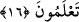

Ubeyd b. Hâlid (r.a.)’den rivayet edildiğine göre Rasûlullah (s.a.) iki adamı
birbirlerine kardeş yaptı. Bunlardan birisi, Allah yolunda şehid düştü. Diğeri de ondan
bir hafta sonra veya o kadar bir zaman sonra vefat etti. Onun cenaze namazını kıldık.
Peygamber (s.a.): “Nasıl duâ ettiniz?” buyurdu. Onlar da: “Ey Allah’ım onu bağışla ve
onu kardeşine kavuştur.” dedik. Peygamber (s.a.) buyurdu ki: “Onun, öbürünün
ölümünden sonra kıldığı namaz ve tuttuğu oruç nereye gitti?” Veya: “Onun ameli
nerede, öbürünün ameli nerede? İkisinin arasında gökle yer arası kadar derece farkı
var. Ömrü uzun ve ameli güzel olana müjdeler olsun!”[167]
Geçmiş ümmetlerde uzun zaman içinde elde edilen feyiz; bu ümmette, fıtri kabiliyetin
kemâlinden dolayı kısa zamanda hâsıl olur. Bu nedenle kişinin önceki asırlardakilerin
amellerini temennî etmesi gerekmez. Çünkü yetmiş yaş uzun bir ömürdür; yüz yaş ise
daha uzundur. Bilakis Allah’ın lütuf ve ihsanıyla, nefs-i emmârenin elinden kurtulmayı
temennî etmelidir. Çünkü nefis ıslah olmayınca ömrünün uzun olması, Allah’ın kahrına
karşı bir fayda sağlamaz. Onun ıslahı da geminin işâret ettiği gibi şer’î ahkâmı
kullanmak iledir. Nitekim gemi, binicisini kurtarır; şerîat da kendisiyle amel edeni
kurtarır. O, kıyamet gününde insanları, zâhiriyle cennete götüren, bâtınıyla da kurbiyet
ve vuslat yoluna sevkeder. İbâresiyle nûr, işâretiyle sevinç ve sürûrdur. İşâret ehli,
mukarrabîn olanlardır. Onlara yakın olmağa çalışanlar da kurtuluşa erenlerdir.
Hâfız der ki:
Hak erlerine dost ol, çünkü Nûh’un gemisinde
Öyle bir toprak var ki tufanı bile bir damlacık su sayar
Dolayısıyla nefsinin tufanına düşen kurtulmak için gayret etsin. Zira sığınak ve
kurtuluş ancak O’nadır.
16. İbrahim’i de gönderdik. O kavmine şöyle demişti: Allah’a kulluk edin. O’na
karşı gelmekten sakının. Eğer bilmiş olsanız bu sizin için daha hayırlıdır.
“İbrahim”, “Nuh” üzerine atfedilmiş olduğu için mensup olarak gelmiştir. Takdiri
şöyledir: Ey Muhammed! Seni göndermezden önce “İbrahim’i de gönderdik. O
kavmine şöyle demişti:”
Bu cümle, mukadder bir “hatırla” fiili ile mansuptur. Yani, sen Mekke halkına
İbrâhim’in kavmine söylediği şu sözü hatırlat, demektir. İbrâhim’in kavmi, Bâbil
halkıdır, Nemrud da bu kavimdendi.
Sadece “Allah’a kulluk edin. O’na karşı gelmekten sakının.” O’ndan korkun ve O’na